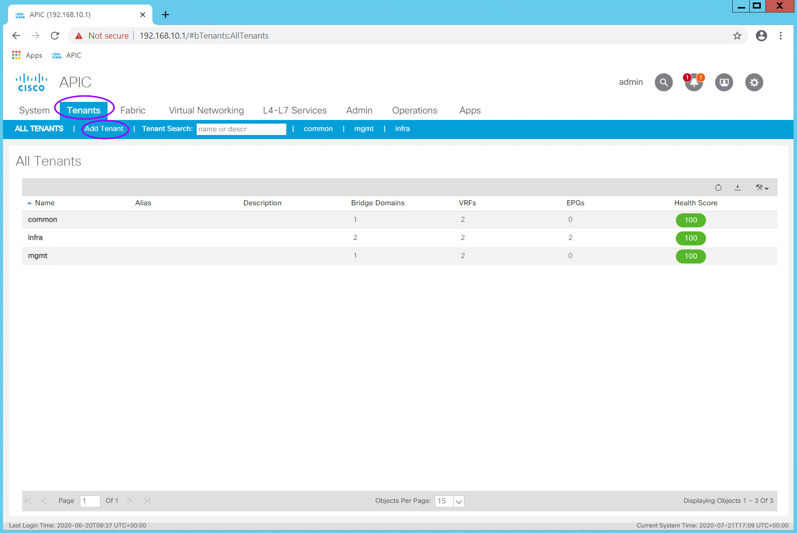

Lab 03 - Tenants
Lab 03 - Configure Tenants and Tenant Constructs¶
Context¶
Having completed the Fabric Policy configuration so that we have an operational Underlay (confusingly called "Overlay-1" as you will see when executing CLI commands) and set our Switch Policies (which define our switches) and Interface Policies, Profiles, and AEPs (which define interface behaviors and allowed encapsulations or Vlans) we now start to define the logical components that will make it very easy to secure hosts and services uniformly at scale without consideration of their IP addresses, rather via their EPG association.
This logical separation begins with one or more Tenants. The fabric comes "out of the box" with three Tenants.
- infra
- A Tenant container for the ACI Fabric Infrastructure
- mgmt
- Dedicated tenant for managing the ACI Fabric
- common
- A tenant with special properties so that any construct configured within this tenant is automatically available to any other Tenant created in the fabric.
- This tenant is very useful for shared services and you will often find an L3Out , VRF, and Bridge Domains which are shared across other Tenants configured in the common tenant.
Lab Goals¶
Tenant portion of the ACI Management Information Tree (MIT)

- Understand the relationships between the ACI Logical Constructs
- Step 1: Create a Tenant and VRF
- Step 2: Create a Bridge Domain and Subnets
- Step 3: Create an Application Profile and EPGs
- Step 4: Create Filters and Contracts
- Step 5: Apply Contracts to EPGs
This is the final "set up only" lab. At the completion of this lab, the fabric will be ready for actual traffic and connectivity.
The following constructs or objects will be configured in this lab:
| Object Type | Object Name | Function |
|---|---|---|
| Tenant | POD##_Tenant | Administrative domain containing all subsequent objects (VRFs, BDs, EPGs, Subnets, Application Profiles) |
| VRF | POD##_VRF | Layer 3 routing and forwarding domain within a tenant |
| Bridge Domain | POD##_BD | Logical container defining flooding behavior. Always associated with a single VRF and often associated with one ore more subnets. |
| Subnet | 10.0.1.254/24 | IP Subnet |
| Application Profile | Tiered_AppProfile | Container for EPGs and the policies which define associations, encapsulations, and interactions |
| EGP | - Web - App - DB |
Logical grouping of endpoints which have similar requirements, often security requirements. |
Reminder:
- ## = Your Pod Number. For example, if your Pod number is 11, then replace ## with 11 (POD11_Tenant)
It is important to think about how to consistently name your constructs. You have some flexibility in the lab but please keep in mind that the lab is shared and so you should always make sure your constructs can be associated to your tenant and your work.
Step 1 - Create a Tenant and VRF¶
A Tenant in ACI represents a management domain. Common tenants in actual deployments include tenants such as:
- Production
- Dev
- QA
- DMZ
As you can see from the MIT diagram, a Tenant contains one or more VRFs and so you often find that the Production tenant has a Production VRF associated with it. A VRF in ACI is a VRF. You cannot have overlapping IP Address space within an VRF and so the same is true for a VRF in ACI.
In the lab, each lab participant will create a tenant based on their Pod assignment (Pod number).
Navigate to Tenants > Add Tenant

The Create Tenant dialog box will appear. The only required field is the Tenant name.
Enter your Tenant name in the Name field and click Submit.
Notice that here you can also associate a Monitoring Policy as well as Security Domains. If this Tenant had special access requirements, then here is where you can associate a specific Security Domain policy with the Tenant. This can be done after the Tenant is created.
\scripts\training\2020\aci4_labguide\docs\images\03_addTenantDialog.jpg)
Because we left the "Take me to this tenant when I click finish" option checked, we will be taken to the new tenant page once Submit is clicked.
From here navigate to Networking > VRFs and right click on the VRF Folder icon. Select Create VRF and the Create VRF dialog will appear.
\scripts\training\2020\aci4_labguide\docs\images\03_addTenantVRF.jpg)
Step 2: Create a Bridge Domain and Subnets¶
In traditional networking a Vlan inherently defines a broadcast domain, an encapsulation, and optionally a subnet. We don't typically think of those items as separate functions but in ACI you must. In its basic form, a Bridge Domain defines a broadcast domain as well as flooding behavior (we don't call this out specifically in traditional network because we dont' have any other options but in ACI we do). ACI can optimize flooding behavior and reduce broadcasts and so a Bridge Domain allows you to define how you want flooding to behave for a particular Bridge Domain (BD). It is also common to define a subnet within the Bridge Domain thereby creating the foundation for a Layer 3 "Vlan". Notice that you don't define the encapsulation within the Bridge Domain. That takes place within an EPG either statically or dynamically depending on the need.
A Bridge Domain can have multiple subnets and contains settings which instantiate the subnet's gateway on the ACI Fabric.
Step 3: Create an Application Profile and EPGs¶
An Application Profile is on organizational or grouping construct only. It is a container or folder for EPGs and their associations.
An EndPoint Group (EPG) is a container for endpoints that share some commonality. In many cases, these are endpoints that share a common security profile. This is an important distinction to make because Contracts (think of these as ACLs which act on EPGs rather than subnets and IP addresses) are applied to EPGs.